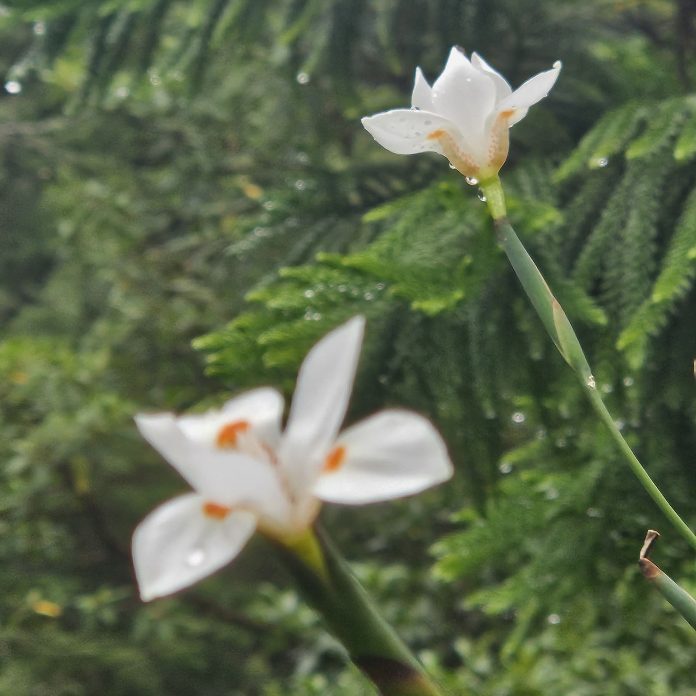

SOBRE
Bem-vindo à nossa jornada visual!
Somos apaixonados por capturar momentos que contam histórias únicas e eternizam emoções. Combinando técnica e criatividade, transformamos o ordinário em extraordinário através de nossas lentes. Nossa equipe de fotógrafos talentosos está empenhada em capturar a essência de cada momento, seja em retratos, paisagens deslumbrantes ou eventos especiais. Nosso objetivo é não apenas criar imagens bonitas, mas também transmitir sentimentos e memórias que serão valorizados para sempre. Cada clique é uma oportunidade de contar uma história visualmente, e é isso que nos motiva a buscar a perfeição em cada imagem. Desde ensaios fotográficos íntimos até grandes eventos, estamos aqui para tornar cada momento inesquecível. Explore nosso portfólio e descubra o mundo através dos nossos olhos.
Seja bem-vindo à nossa jornada fotográfica!
